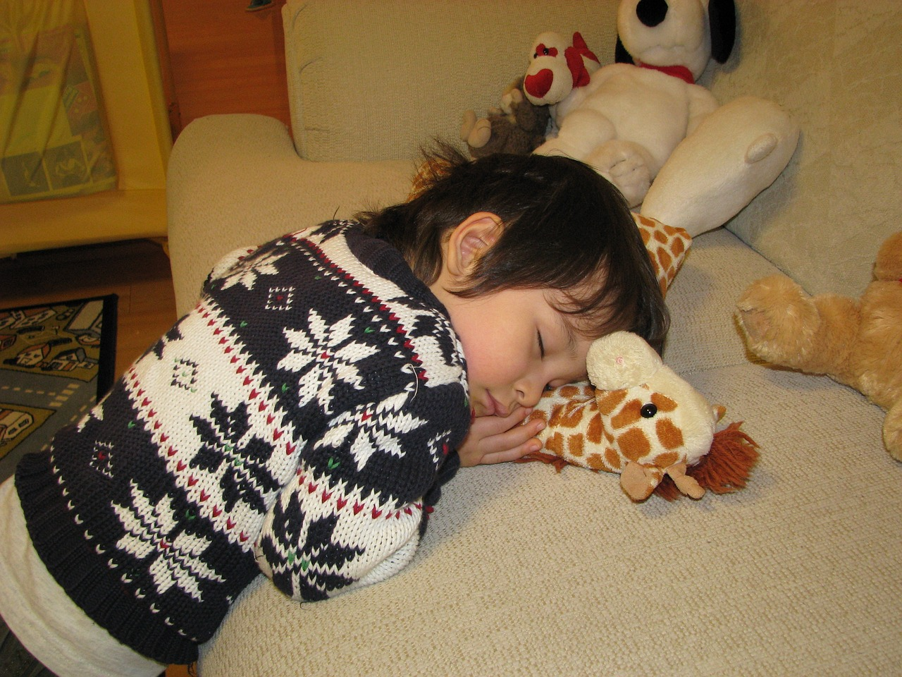
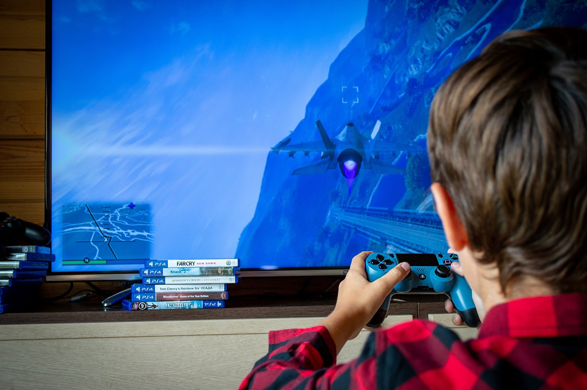

Quick Nap
Napping boosts alertness and enhances mood, making you feel refreshed and revitalized.
It improves memory and cognitive function, aiding in better learning and problem-solving.
Regular napping helps reduce stress and promotes heart health.
Just a short nap can make a significant difference in your day!

Video games
Playing video games enhances cognitive skills like problem-solving and strategic thinking.
It improves hand-eye coordination and fine motor skills, boosting dexterity.
Video games also provide a fun way to relax and reduce stress, promoting mental well-being.
Engaging in gaming can foster social connections through multiplayer experiences and online communities.

Coding
Coding enhances problem-solving and critical thinking skills, allowing you to approach challenges logically and creatively.
It opens doors to various career opportunities in tech and beyond, empowering you to create and innovate.
Learning to code also improves persistence and resilience, as it involves tackling complex problems and debugging.
Additionally, coding can be a highly satisfying and rewarding activity, providing a sense of accomplishment when you see your creations come to life.
Cooking
Cooking is a part of everyone's daily activities and not only in health, it also have impact on our decision making.
Cooking teaches one to make something or try something new which increases their creativity level.
Apart from that, it also helps in making career as we have seen some chef getting paid in millions due to this sector.

Doing a little exercise
Exercises are what keeps a person in shape and healthy.
They promotes posotive thoughts not only on body but also on environment around them too.
Exercises keeps a lot of diseases away from body that's why it can be noticed that people involved in cardio and other physical activities remain healthier than the one who do not.